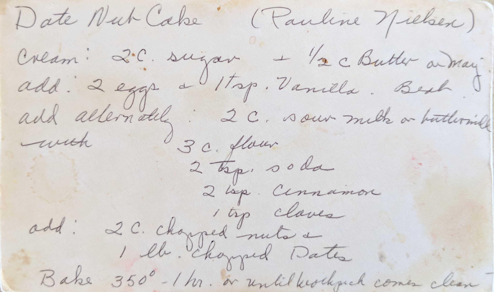
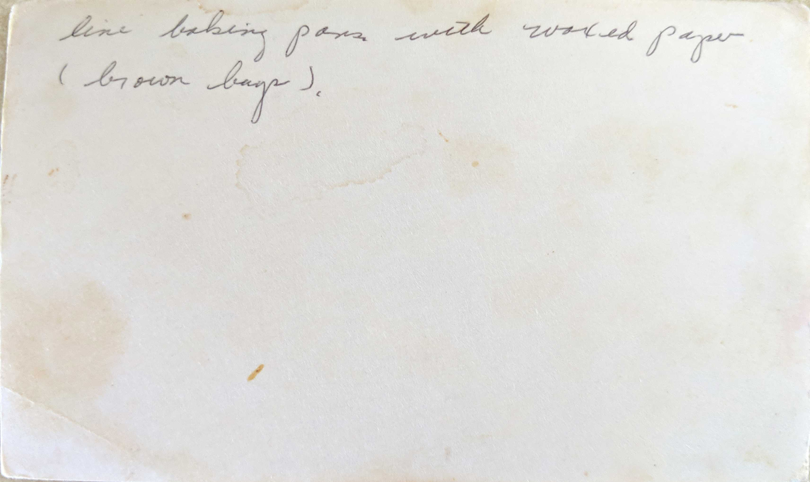

Date Nut Cake
(Pauline Nielsen)
Cream : 2 C. sugar + 1/2 C. Butter or Marg
add 2 eggs + 1 tsp. Vanilla. Beat
add alternately - 2 C. sour milk or buttermilk
with 3 C. flour
2 tsp. soda
2 tsp. cinnamon
1 tsp. cloves
add 2 C. chopped nuts
1 lb chopped Dates
Bake 350° - 1 hr. or until toothpickk comes clean

line baking pan with waxed paper (brown bags).